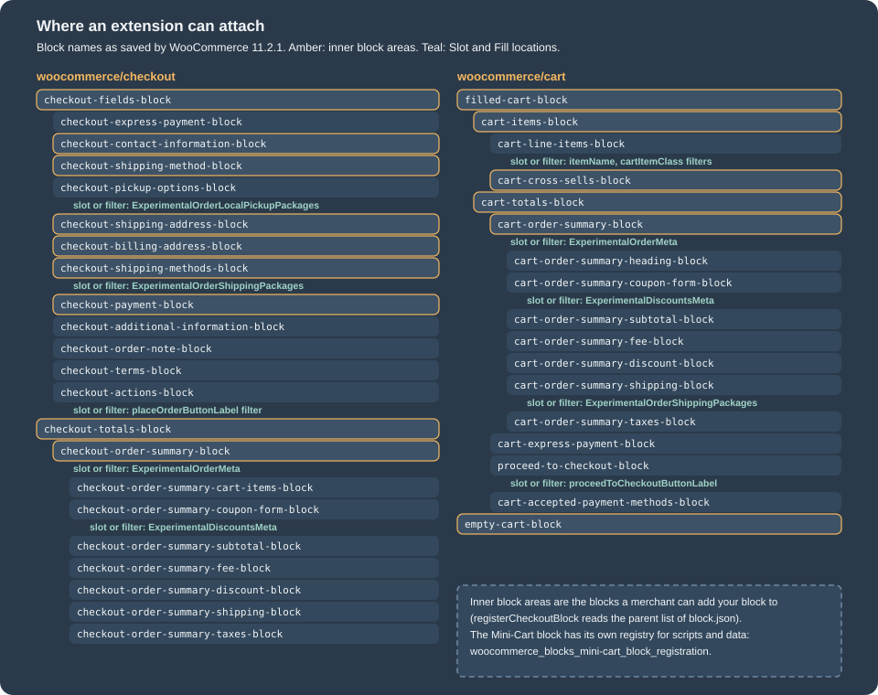
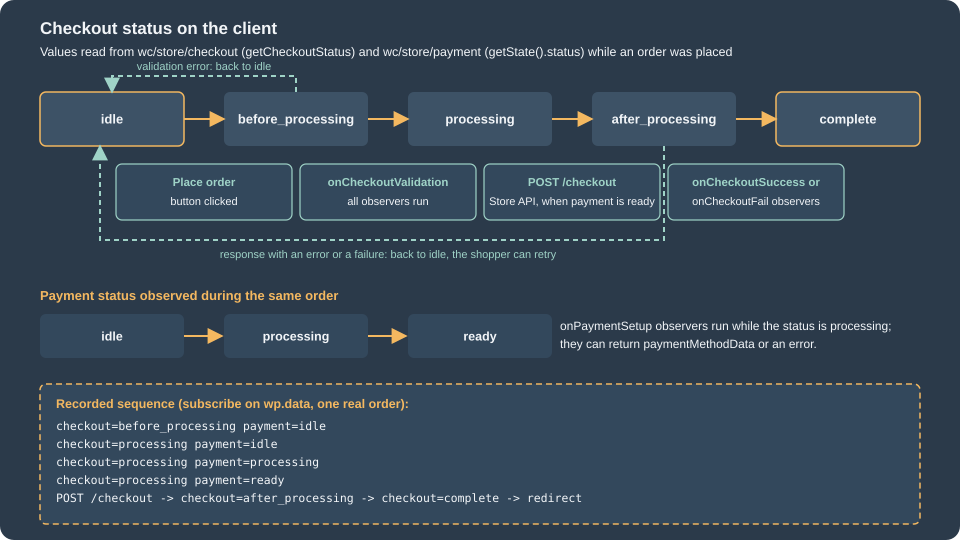
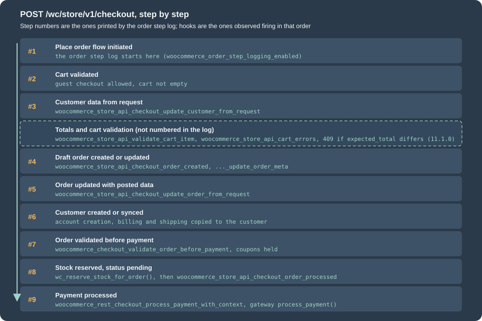
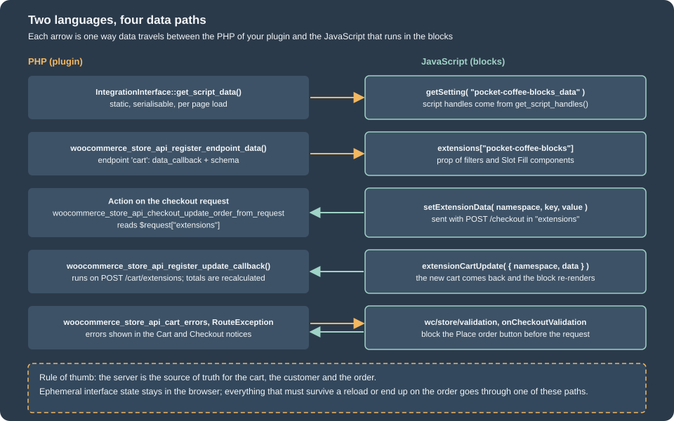
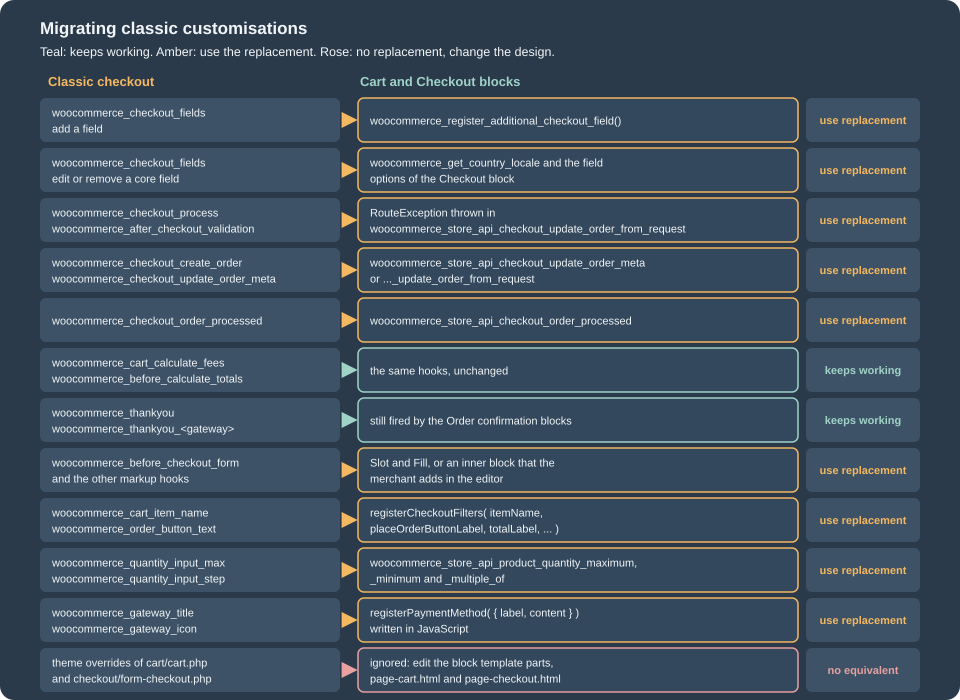

Cart and Checkout Blocks
|
This content was generated with the assistance of AI and should be verified against the official documentation before being relied on in production. |
This page was written against WordPress 7.1.3 and WooCommerce 11.2.1 (released on 2026-10-09) and checked on 2026-10-27. The
Cart and Checkout blocks are part of WooCommerce core, so every self-hosted store has them. They have been the cart and
checkout that a new store gets since WooCommerce 8.3
(November 2023). A store that is older than that usually still has its Cart and Checkout pages built on the shortcodes
[woocommerce_cart] and [woocommerce_checkout], because an upgrade does not rewrite pages, and a large part of the
WooCommerce literature (every WooCommerce book in the bibliography of this section) describes only the shortcode version. This page
explains both, shows how the block version works from the click on the Place order button down to the order in the
database, and then shows every way to extend it: the PHP integration class, the data that travels with the Store API, the
checkout filters, Slot and Fill, inner blocks, validation and events. The last part is a migration guide for the
customisations that were written for the shortcode checkout.
The running example is the Pocket Coffee shop. One small plugin, Pocket Coffee Checkout Blocks, is built on this page and exercised on a local store (WordPress 7.1.3, WooCommerce 11.2.1, PHP 8.3, MariaDB 11.8, the Twenty Twenty-Five block theme). It registers an integration, adds a "free shipping" notice and a gift-wrap option to the totals of the Cart and the Checkout, renames the totals label and the order button, caps the quantity of a bean bag at 10, refuses parcels over 5 kg and orders to the Canary Islands, and adds one inner block to the Checkout with two checkboxes: Join the Coffee Club (optional) and I understand that beans are roasted to order (required). Everything the page shows as output was produced by that plugin or by a small throw-away probe that is described where it is used: pages were opened and orders were placed in a headless Chrome driven over the DevTools protocol, the Store API was called with curl and Python, WP-CLI read the results, and the quotations of logs and hook lists are the ones that were recorded.
Three things could not be run, and the page says so where they matter. The JavaScript is written without JSX and without a
build step so that it runs as it stands; a @wordpress/scripts build (the route that the official documentation
recommends) was not run because the Node toolchain of the test store does not include it. The block editor itself was not
opened (it needs a signed-in administrator session), so the editor script of the inner block was syntax-checked and is
shown, but its behaviour in the editor was not observed. WooPayments and every other payment extension that needs an account
were not installed; the orders of this page were paid with the Direct bank transfer gateway.
The page follows Store API, which documents the endpoints that these blocks call,
and Product Collection and Blocks; the field API is on
Additional Checkout Fields, the payment methods on
Payment Gateways, and the PHP language basics on the
PHP section of this site.
Blocks and shortcodes
The two experiences are two different applications that happen to sit on the same URLs.
| Shortcode pages | Block pages | |
|---|---|---|
Content of the page |
|
A |
Who draws the page |
PHP templates ( |
A React application in the browser, started from block markup and from data that the server puts in the page |
How the order is sent |
A form post to |
A |
Fields |
The array that the |
The core address fields (country-aware), the settings of the blocks, and the Additional Checkout Fields API |
Payment methods |
|
The gateway needs a JavaScript registration ( |
Extension points |
The classic action and filter set ( |
The Store API hooks, the checkout filters, Slot and Fill, inner blocks; a subset of the classic lifecycle hooks still runs |
Look and feel |
Theme CSS and template overrides |
Global styles, block templates and the block settings |
A store can have either, and a store can be switched from one to the other, because both create ordinary WooCommerce orders. To see what a store uses, read the content of the pages that WooCommerce knows as Cart and Checkout. This script was run on the test store (the pages are the ones WooCommerce created on activation, ID 6 and 7):
foreach ( array( 'cart', 'checkout' ) as $name ) {
$id = wc_get_page_id( $name );
$content = get_post_field( 'post_content', $id );
printf(
"%-9s page %d: block=%s shortcode=%s classic-block=%s\n",
$name,
$id,
has_block( 'woocommerce/' . $name, $content ) ? 'yes' : 'no',
has_shortcode( $content, 'woocommerce_' . $name ) ? 'yes' : 'no',
has_block( 'woocommerce/classic-shortcode', $content ) ? 'yes' : 'no'
);
}cart page 6: block=yes shortcode=no classic-block=no
checkout page 7: block=yes shortcode=no classic-block=noTo go back to the shortcode, the content of the page becomes a Classic Shortcode block. Its markup, which was saved on a
test page and rendered, is one line, and it rendered the full classic form (the woocommerce-checkout form, the
billing_postcode field and the woocommerce_checkout_place_order button were all in the HTML):
<!-- wp:woocommerce/classic-shortcode {"shortcode":"checkout"} /-->The shortcode checkout is still supported in 11.2.1, which is why a store with years of customisations can stay on it, but new features of the checkout, such as the Additional Checkout Fields API, exist only for the block checkout. A new extension should work on the blocks and declare it.
Declaring compatibility
A plugin tells WooCommerce whether it works with the Cart and Checkout blocks with the same call that declares HPOS
support, on before_woocommerce_init:
add_action(
'before_woocommerce_init',
function () {
if ( class_exists( \Automattic\WooCommerce\Utilities\FeaturesUtil::class ) ) {
\Automattic\WooCommerce\Utilities\FeaturesUtil::declare_compatibility( 'cart_checkout_blocks', __FILE__, true );
}
}
);Pass false to declare that the plugin is incompatible; do nothing if the plugin does not touch the cart or the checkout.
WooCommerce uses the declarations to warn the merchant about plugins that do not support the blocks. It only checks the declaration of plugins that have a WC tested up to
header in the main plugin file, so keep that header current. The result can be read from code; on the test store this
returned for the plugin of this page:
$f = \Automattic\WooCommerce\Utilities\FeaturesUtil::get_compatible_plugins_for_feature( 'cart_checkout_blocks', true );
echo json_encode( array(
'mine_compatible' => in_array( 'pocket-coffee-checkout-blocks/pocket-coffee-checkout-blocks.php', $f['compatible'], true ),
'incompatible' => $f['incompatible'],
) );{"mine_compatible":true,"incompatible":[]}The result has three lists, compatible, incompatible and uncertain; the last one holds the plugins that made no
declaration at all.
Where the page lives in a theme
The Cart and Checkout pages are ordinary pages whose content is the block. A block theme draws them through the templates
page-cart.html and page-checkout.html, which print the title and the content of the page; the documentation says to
keep the Cart and Checkout blocks in the page content and not in the template, otherwise the page editor and the front end
disagree and features that inspect the page content do not find the block. The Checkout template uses a header without
the site navigation (the checkout-header template part). Section
Themes: Block and Classic covers the theme side.
The blocks and their inner block areas

A block-based checkout is a tree of blocks. This is the tree that the Checkout and Cart pages had on the test store, read with
parse_blocks() from the content that WooCommerce wrote on activation:
woocommerce/checkout
woocommerce/checkout-fields-block
woocommerce/checkout-express-payment-block
woocommerce/checkout-contact-information-block
woocommerce/checkout-shipping-method-block
woocommerce/checkout-pickup-options-block
woocommerce/checkout-shipping-address-block
woocommerce/checkout-billing-address-block
woocommerce/checkout-shipping-methods-block
woocommerce/checkout-payment-block
woocommerce/checkout-additional-information-block
woocommerce/checkout-order-note-block
woocommerce/checkout-terms-block
woocommerce/checkout-actions-block
woocommerce/checkout-totals-block
woocommerce/checkout-order-summary-block
woocommerce/checkout-order-summary-cart-items-block
woocommerce/checkout-order-summary-coupon-form-block
woocommerce/checkout-order-summary-subtotal-block
woocommerce/checkout-order-summary-fee-block
woocommerce/checkout-order-summary-discount-block
woocommerce/checkout-order-summary-shipping-block
woocommerce/checkout-order-summary-taxes-block
woocommerce/cart
woocommerce/filled-cart-block
woocommerce/cart-items-block
woocommerce/cart-line-items-block
woocommerce/product-collection (collection: woocommerce/product-collection/cross-sells)
woocommerce/cart-totals-block
woocommerce/cart-order-summary-block (heading, coupon form, subtotal, fee, discount, shipping, taxes)
woocommerce/cart-express-payment-block
woocommerce/proceed-to-checkout-block
woocommerce/cart-accepted-payment-methods-block
woocommerce/empty-cart-block (a message pattern, a separator and a "new in store" product block)Three properties of the tree matter for extension work.
-
Most of the blocks are not editable on the front end by plugins. They are rendered by React from data, and what you may change is limited to the extension points of the following sections. What a merchant can do in the editor is move blocks, remove optional ones, change the text and the settings of a block, and add blocks into the inner block areas.
-
Inner block areas are the blocks that accept children: in the figure, the ones outlined in amber. A block that you register can be limited to some areas with the
parentproperty of itsblock.json. The list of areas in the source of the blocks registry (trunk, October 2026) is:woocommerce/checkout,checkout-fields-block,checkout-totals-block,checkout-contact-information-block,checkout-shipping-address-block,checkout-billing-address-block,checkout-shipping-method-block,checkout-shipping-methods-block,checkout-pickup-options-block,checkout-payment-block,woocommerce/cart,empty-cart-block,filled-cart-block,cart-items-block,cart-cross-sells-block,cart-totals-block, the Mini-Cart blocks (mini-cart-contents,empty-mini-cart-contents-block,filled-mini-cart-contents-block,mini-cart-title-block,mini-cart-items-block,mini-cart-footer-block) and the order summary blocks of the Cart and the Checkout (and their totals blocks). -
A block can be forced. If the
lockattribute of the block defaults to{ remove: true, move: true }, WooCommerce inserts the block automatically into the area and the merchant can neither move nor remove it; that is how the core blocks and the extension blocks that must always be there are built.
The only blocks of the tree that are not WooCommerce-specific are the ones that the merchant types in: paragraphs, images and
separators can be added to any area (additionalCartCheckoutInnerBlockTypes widens the list, see the filters).
Data: the stores, the server and the browser
The server is the source of truth for everything that is transactional or must survive a reload: the cart items and their
quantities and prices, the totals, the customer and the addresses, the shipping rates and the chosen rate, the coupons,
and the additional fields. The browser holds copies of that data in @wordpress/data stores and keeps interface state
(an open panel, a field being edited, an unsent validation message) to itself. When the page loads WooCommerce puts the
cart in the page (hydration) so that the blocks do not wait for a request, and after that every change goes through the
Store API and the response replaces the copy.
The stores are registered by the script handle wc-blocks-data-store and exposed on window.wc.wcBlocksData. The names
exported there on the test store (read in the browser) are the store descriptors cartStore, checkoutStore,
paymentStore, validationStore, collectionsStore, queryStateStore, schemaStore and storeNoticesStore, their
string keys (CART_STORE_KEY, CHECKOUT_STORE_KEY, PAYMENT_STORE_KEY, VALIDATION_STORE_KEY, COLLECTIONS_STORE_KEY,
QUERY_STATE_STORE_KEY, SCHEMA_STORE_KEY, STORE_NOTICES_STORE_KEY), and helpers such as processErrorResponse,
getErrorDetails and isEditor. The documentation prefers reading the stores over importing the internal React hooks of the
blocks, because the stores are the public contract.
| Store | Key | What it holds |
|---|---|---|
Cart |
|
The cart as the Store API returns it (items, totals, coupons, fees, shipping rates, customer addresses, |
Checkout |
|
The checkout flow: status ( |
Payment |
|
The payment status ( |
Validation |
|
Field-level errors keyed by error ID; each is |
Store notices |
|
The notices shown by the blocks, by notice context. |
Collections, query state, schema |
|
Cached REST collections for blocks that list products, arbitrary query values by context, and the REST routes. Used by product blocks and internals. |
Source: WooCommerce docs: Data stores
The selectors that the stores had on the Checkout page of the test store were read with Object.keys( wp.data.select( store ) ).
For the stores that extensions use most:
wc/store/cart getCartData, getCartTotals, getCartErrors, getCartItem, getCartMeta, getCustomerData, getShippingRates,
getNeedsShipping, getHasCalculatedShipping, getCouponBeingApplied, getCouponBeingRemoved,
isApplyingCoupon, isRemovingCoupon, isCartDataStale, isCustomerDataUpdating, isShippingRateBeingSelected,
isItemPendingDelete, isItemPendingQuantity, hasPendingItemsOperations, ...
wc/store/checkout getCheckoutStatus, isIdle, isBeforeProcessing, isProcessing, isAfterProcessing, isComplete,
isCalculating, hasError, hasOrder, getOrderId, getOrderNotes, getRedirectUrl, getExtensionData,
getAdditionalFields, getUseShippingAsBilling, getEditingBillingAddress, getEditingShippingAddress,
getShouldCreateAccount, getCustomerId, prefersCollection, ...
wc/store/payment getState, getActivePaymentMethod, getAvailablePaymentMethods, getAvailableExpressPaymentMethods,
getPaymentMethodData, getPaymentResult, getSavedPaymentMethods, isPaymentIdle, isPaymentProcessing,
isPaymentReady, hasPaymentError, isExpressPaymentStarted, ...and the keys of the object that getCartData() returned: coupons, shippingRates, shippingAddress, billingAddress,
items, itemsCount, itemsWeight, crossSells, needsShipping, needsPayment, hasCalculatedShipping, fees, totals,
errors, paymentMethods, paymentRequirements and extensions. The totals object has total_items, total_fees,
total_discount, total_shipping, total_price, total_tax, tax_lines and the currency description (currency_code,
currency_minor_unit, the separators, prefix and suffix). All money values are strings in the minor unit of the currency
(cents), which is why a cart of 13.40 EUR reports "total_price":"1340". A component reads the stores with
useSelect:
const { useSelect } = window.wp.data;
const { cartStore, checkoutStore } = window.wc.wcBlocksData;
const Status = () => {
const { total, status } = useSelect( ( select ) => ( {
total: select( cartStore ).getCartTotals().total_price,
status: select( checkoutStore ).getCheckoutStatus(),
} ) );
return `${ status }: ${ total }`;
};Source: WooCommerce docs: Data stores
The actions of the payment store are internal in 11.2.1 (the documentation says extensions should not dispatch them yet); the
extension points below are the supported route to change behaviour. The documentation of the data flow adds three rules worth remembering. Data entered in an address form is sent to the server
at once (a debounced pushChanges call, and the whole cart in the response replaces the local copy, so a server hook that
rewrites a city name changes the text in the field while the shopper types, which is jarring: normalise on checkout
instead). A coupon or a shipping rate triggers a request and a new cart. And the payment method that the shopper picks is not
sent until the order is placed, unless an extension sends it earlier with extensionCartUpdate.
How the Checkout block processes an order
In the browser

When the shopper presses Place order the block changes the checkout status step by step and emits events that extensions can
observe. The statuses are values of the checkout store (isIdle(), isBeforeProcessing(), isProcessing(),
isAfterProcessing(), isComplete()), and the payment store has its own status that moves in between. The sequence that a
subscription on wp.data recorded while an order was placed on the test store was:
checkout=before_processing payment=idle
checkout=processing payment=idle
checkout=processing payment=processing
checkout=processing payment=ready
POST /checkout?_locale=site
checkout=after_processing payment=ready
checkout=complete payment=ready -> redirect to the order-received pageThe steps in words:
-
Click. The status becomes
before_processing. Validation is run in this status. -
onCheckoutValidation. Every observer runs (they are not aborted by the first failure). An observer returnstrue(fine),false(go back to idle) or an object witherrorMessage(a notice),context(which notice area) andvalidationErrors(inline errors by field). Field errors that were put in the validation store earlier also stop the flow, and the block scrolls to and focuses the first error. -
Status
processing; payment statusprocessing. The payment method’sonPaymentSetupobservers run; they may return{ type: 'success', paymentMethodData },{ type: 'failure', message }or{ type: 'error', message, validationErrors }. This step does not take the payment: it prepares data (for a card, a token), and a returnedpaymentMethodDatabecomespayment_dataof the request. When all observers are done, the payment status becomesready. -
The request. The block sends
POST /wc/store/v1/checkout. The body (read from the request on the test store) is shown below. -
Status
after_processing. The response is stored (the payment result and the redirect URL). If there is no error, theonCheckoutSuccessobservers run; on an error,onCheckoutFail. An observer may return{ type: 'success', redirectUrl },{ type: 'failure', message, retry }, ortrue. -
Status
completeand the browser is sent to the redirect URL, normally the order-received page.
The request body of an order for one 250 g bag, placed by Ada Lovelace (the test customer), was (the order-attribution values
are cut here for length; they are the source and device data that WooCommerce collects with the Order Attribution feature
and send under the extension namespace woocommerce/order-attribution):
{
"additional_fields": {},
"billing_address": { "first_name": "Ada", "last_name": "Lovelace", "company": "", "address_1": "Calle Mayor 1", "address_2": "",
"city": "Madrid", "state": "M", "postcode": "28013", "country": "ES", "email": "ada@example.test", "phone": "" },
"create_account": false,
"customer_note": "",
"customer_password": "",
"extensions": {
"woocommerce/order-attribution": { "source_type": "typein", "referrer": "(none)", "utm_source": "(direct)", "...": "..." },
"pocket-coffee-blocks": { "club_optin": true, "roast_ack": true }
},
"shipping_address": { "first_name": "Ada", "last_name": "Lovelace", "company": "", "address_1": "Calle Mayor 1", "address_2": "",
"city": "Madrid", "state": "M", "postcode": "28013", "country": "ES", "phone": "" },
"expected_total": "1340",
"payment_method": "bacs",
"payment_data": [ { "key": "wc-bacs-new-payment-method", "value": false } ]
}Three details of this body deserve attention. extensions is where every extension of the page puts what it wants the server to
see (the second namespace is the plugin of this page; the first is WooCommerce’s own order attribution). additional_fields
carries the values of the Additional Checkout Fields. And expected_total is the total that the shopper saw: since WooCommerce
11.1.0 the server compares it with the total it computes for the request and answers with HTTP 409 when they differ (because
a price, a quantity, a stock limit, a coupon, shipping or tax changed meanwhile), so a shopper never pays an amount that was not
on the screen.
The events and the stores live in the browser, so an extension that depends on them depends on its script loading and running without errors. Keep extension scripts small and test with the browser console open.
On the test store the observers of the plugin logged these three console lines over two clicks on Place order (the first click was refused because the roast date policy was not confirmed, the second placed the order), which shows that validation runs on every attempt and that the success observer receives the response of the server:
[pocket-coffee] onCheckoutValidation
[pocket-coffee] onCheckoutValidation
[pocket-coffee] onCheckoutSuccess payment successThe object that onCheckoutSuccess received in 11.2.1 had the keys redirectUrl, orderId, customerId, orderNotes and
processingResponse (with message, paymentStatus, redirectUrl and paymentDetails). Two differences from the official
text are worth knowing: the documentation names the last one paymentResult, and orderId was 0 in the run, while the
redirect URL already contained the order ID. Read processingResponse and the redirect URL, not orderId.
On the server

The server side of the request is Automattic\WooCommerce\StoreApi\Routes\V1\Checkout::process_order(), an optimistic flow
that tries to save the order as few times as possible. The same code answers a call from the block, from a mobile
application and from a script. Order step logging (the filter that controls it was added in 11.0.1 and the default is on)
writes every step to a WooCommerce log whose source is place-order-debug- followed by a short random ID; the messages of
the order placed above were:
[Store API #1] Place Order flow initiated
[Store API #2] Cart validated
[Store API #3::update_customer_from_request] Persisted shipping_address fields
[Store API #3::update_customer_from_request] Persisted billing_address fields
[Store API #3::update_customer_from_request] Persisted contact fields
[Store API #3] Updated customer data from request
[Store API #4::create_or_update_draft_order] Created order from cart
[Store API #4::create_or_update_draft_order] Set order draft id
[Store API #4] Created/Updated draft order
[Store API #5::update_order_from_request] Set customer note and payment method
[Store API #5::update_order_from_request] Persisted additional fields
[Store API #5] Updated order with posted data
[Store API #6::process_customer] Synced customer data from order
[Store API #6] Created and/or persisted customer data from order
[Store API #7] Validated order data
[Store API #8] Reserved stock for order
[Store API #9] Order processedEvery line also carries a JSON context (the order ID, the totals, the cart items and a backtrace); the file is in the wc-logs
folder of the uploads directory and in WooCommerce > Status > Logs. The woocommerce_order_step_logging_enabled filter turns the
logging off (it is read once at the start of the request). The steps, in order, with the number that the log gives them:
-
Start (#1). The order flow begins and the logging session starts.
-
Validate the user and the cart (#2). A guest may only check out if guest checkout is allowed, and the cart must not be empty.
-
Update the customer (#3) in the session from the request (addresses, contact fields, additional fields of the
contactandaddresslocations), firingwoocommerce_store_api_checkout_update_customer_from_request( $customer, $request ). -
Calculate the totals and validate the cart (not numbered in the log):
woocommerce_store_api_validate_cart_item( $product, $cart_item )for each item andwoocommerce_store_api_cart_errors( $errors, $cart )once, then the comparison ofexpected_totalwith the computed total (11.1.0). -
Create or update the draft order (#4) from the cart (
woocommerce_store_api_checkout_order_created( $order )andwoocommerce_store_api_checkout_update_order_meta( $order )). Since 10.9.0 the draft order is created here, at place-order time, and not while the shopper types. -
Write the posted data into the order (#5) and fire
woocommerce_store_api_checkout_update_order_from_request( $order, $request )(the right place to read$request['extensions']and to save order meta; throwing aRouteExceptionhere rejects the order). -
Create or sync the customer (#6) (a new account if the shopper asked for one).
-
Validate the order before payment (#7) with
woocommerce_checkout_validate_order_before_payment( $order, $errors )(since 9.9.0) and hold the coupons used (usage limits). -
Reserve the stock (#8) for the order (
wc_reserve_stock_for_order(); stock is only held while the order has the statuscheckout-draftorpending), set the status topendingand firewoocommerce_store_api_checkout_order_processed( $order ): the order is complete and valid, no money has moved yet. -
Process the payment (#9). If the order needs payment,
woocommerce_rest_checkout_process_payment_with_context( $context, &$result )runs; the gateway’sprocess_payment()(see Payment Gateways) sets the result (success,failure,pending,error) and the redirect URL. If the order needs no payment, it is completed without a gateway. The status after the gateway is the gateway’s decision (on-holdfor bank transfer,processingfor a paid order).
The documentation page of that name describes the client flow in terms of files (checkout-processor.js) and context
providers; the steps above are what the server of 11.2.1 does, from its source and from the logs of the test store. Opening
the Checkout page with a full cart did not create a draft order: the number of wc-checkout-draft orders in the database
stayed at 16.
The names of the hooks that actually fired during one POST /wc/store/v1/checkout, recorded in order by a temporary plugin
that logged every hook with a matching name once (the many woocommerce_order_item_* and save hooks between them are left out):
woocommerce_blocks_validate_location_order_fields
woocommerce_checkout_init
woocommerce_store_api_checkout_update_customer_from_request
woocommerce_store_api_validate_cart_item
woocommerce_store_api_cart_errors
woocommerce_checkout_create_order_line_item
woocommerce_checkout_create_order_shipping_item
woocommerce_store_api_checkout_order_created
woocommerce_store_api_checkout_update_order_meta
woocommerce_store_api_checkout_update_order_from_request
woocommerce_checkout_validate_order_before_payment
woocommerce_new_order
woocommerce_order_status_pending
woocommerce_order_status_checkout-draft_to_pending
woocommerce_order_status_changed
woocommerce_store_api_checkout_order_processed
woocommerce_rest_checkout_process_payment_with_context
woocommerce_order_status_on-hold
woocommerce_reduce_order_stock
woocommerce_order_status_pending_to_on-hold
woocommerce_order_status_pending_to_on-hold_notificationand these classic checkout hooks did not fire at all in that request: woocommerce_checkout_process,
woocommerce_after_checkout_validation, woocommerce_checkout_create_order, woocommerce_checkout_update_order_meta,
woocommerce_checkout_order_processed and woocommerce_before_checkout_process. The classic woocommerce_checkout_create_order_line_item
and woocommerce_checkout_create_order_shipping_item did fire (line items are built with the same code), and
the order-status hooks of the order lifecycle (woocommerce_new_order, woocommerce_order_status_*,
woocommerce_reduce_order_stock) fire as always. A customisation that relies on a classic checkout hook must therefore move
to the Store API hook of the same step; the mapping table in the migration section lists the pairs.
The same flow as a sequence diagram:
Errors
A failure at any step is returned as an HTTP error with a JSON body { code, message, data }. The status says who must act:
400 for something the shopper or the code can correct (a validation error, a bad quantity), 409 when the cart changed and the
client must reload it (the body contains the cart), and 5xx for a server problem. The block shows the message in a notice at the
top of the checkout. Messages are shown to the shopper: write them for a customer. On the test store these requests were made with the Store API directly (a script that creates a cart, adds a bag,
and posts to /checkout; the cart token authenticates the guest):
POST /checkout, roast_ack false -> 400 {"code": "pocket_coffee_roast_ack_missing", "message": "Please confirm the roast date policy.", "data": {"status": 400}}
POST /checkout, shipping state GC -> 400 {"code": "woocommerce_rest_checkout_custom_validation_error", "message": "Pocket Coffee does not ship to the Canary Islands yet.", "data": {"status": 400}}
POST /checkout, a cart of 6 kg -> 409 {"code": "pocket_coffee_parcel_weight", "message": "A parcel can weigh 5 kg at most. Please split your order."}
POST /checkout, valid order -> 200 {"order_id": 447, "status": "on-hold", "payment_method": "bacs", "payment_result": {"payment_status": "success", ...}}Extending the blocks

Everything below is one plugin. The sections show its pieces, then the complete files. The choice of the extension point follows the question "what do you want to change?":
| I want to … | Use |
|---|---|
load a script and give it settings |
|
show server data that changes with the cart |
|
change a label, a price format or a class |
|
render a component in a fixed place |
Slot and Fill ( |
collect input from the shopper |
an inner block with |
run server code when the shopper clicks something |
|
stop the order |
|
save something on the order |
|
Build and enqueue
The front-end code of an extension is JavaScript that must be loaded on the page of the block, after the scripts of WooCommerce
that it uses. The recommended build is @wordpress/scripts with the WooCommerce Dependency Extraction Webpack Plugin
(@woocommerce/dependency-extraction-webpack-plugin). The plugin turns an import from a WooCommerce package into a read of the
global (import { registerCheckoutFilters } from '@woocommerce/blocks-checkout' becomes window.wc.blocksCheckout) and writes
a build/index.asset.php file that lists the script handles to depend on. A webpack.config.js that adds it to the default
configuration is:
const defaultConfig = require( '@wordpress/scripts/config/webpack.config' );
const WooCommerceDependencyExtractionWebpackPlugin = require( '@woocommerce/dependency-extraction-webpack-plugin' );
module.exports = {
...defaultConfig,
plugins: [
...defaultConfig.plugins.filter( ( plugin ) => plugin.constructor.name !== 'DependencyExtractionWebpackPlugin' ),
new WooCommerceDependencyExtractionWebpackPlugin(),
],
};(This configuration is reduced from the one in the @woocommerce/extend-cart-checkout-block template, which is the official
starting point: npx @wordpress/create-block -t @woocommerce/extend-cart-checkout-block your_extension_name. It was not run;
the example plugin of this page avoids the build by reading the globals and by listing the handles itself.) The mapping between the globals and the script handles that
the page of the example needs, which the generated asset file would contain, is:
| Global | Script handle | Provides |
|---|---|---|
|
|
|
|
|
|
|
|
The stores listed above. |
|
|
|
|
|
|
|
|
The shared components ( |
The exports in the third column are the keys of each global, read in the browser on the test store; the script handles are the
ones that the example plugin lists as dependencies and that WordPress resolved (the scripts loaded and ran). The official page about wc.blocksCheckoutEvents documents onCheckoutValidation directly on that global; in 11.2.1 it is on the
checkoutEvents object inside it, which is what the example uses.
IntegrationInterface
Automattic\WooCommerce\Blocks\Integrations\IntegrationInterface is how an extension gets its scripts, styles and settings
loaded where they are needed. A class implements five methods and is registered with the IntegrationRegistry of each block
(mini-cart, cart, checkout) on the action woocommerce_blocks_{area}_block_registration, which passes the registry:
| Method | Purpose |
|---|---|
|
A unique name. The client reads the data with |
|
Called when the integration is registered. Register the scripts and styles here. |
|
Handles of the scripts to enqueue on the front end when the block is present. |
|
Handles of the scripts to enqueue in the block editor. |
|
An associative array, serialised to JSON, available to the scripts with |
The registrations must run after WooCommerce has loaded the blocks, that is on woocommerce_blocks_loaded, and the script has
to be registered with wc-settings among its dependencies and in the footer (WooCommerce moves a header script that depends
on wc-settings to the footer and prints a console warning). The class of the example plugin:
<?php
/**
* Integration with the Mini-Cart, Cart and Checkout blocks.
*
* @package PocketCoffee
*/
use Automattic\WooCommerce\Blocks\Integrations\IntegrationInterface;
defined( 'ABSPATH' ) || exit;
/**
* Registers the scripts and passes static data to them.
*/
class Pocket_Coffee_Blocks_Integration implements IntegrationInterface {
/**
* Unique name; the client reads the data with getSetting( 'pocket-coffee-blocks_data' ).
*
* @return string
*/
public function get_name() {
return 'pocket-coffee-blocks';
}
/**
* Registers the scripts. Called once per request, when a block asks for the integration.
*/
public function initialize() {
$base = plugin_dir_url( POCKET_COFFEE_BLOCKS_FILE ) . 'assets/';
$ver = filemtime( plugin_dir_path( POCKET_COFFEE_BLOCKS_FILE ) . 'assets/frontend.js' );
wp_register_script(
'pocket-coffee-blocks-frontend',
$base . 'frontend.js',
array( 'wc-blocks-checkout', 'wc-blocks-checkout-events', 'wc-blocks-registry', 'wc-blocks-data-store', 'wc-settings', 'wp-element', 'wp-i18n', 'wp-data', 'wp-plugins' ),
$ver,
true
);
wp_register_script(
'pocket-coffee-blocks-editor',
$base . 'editor.js',
array( 'wc-blocks-checkout', 'wc-settings', 'wp-blocks', 'wp-block-editor', 'wp-element', 'wp-i18n' ),
$ver,
true
);
wp_set_script_translations( 'pocket-coffee-blocks-frontend', 'pocket-coffee-checkout-blocks' );
}
/**
* Scripts loaded on the storefront.
*
* @return string[]
*/
public function get_script_handles() {
return array( 'pocket-coffee-blocks-frontend' );
}
/**
* Scripts loaded in the block editor.
*
* @return string[]
*/
public function get_editor_script_handles() {
return array( 'pocket-coffee-blocks-frontend', 'pocket-coffee-blocks-editor' );
}
/**
* Static data for the scripts; it must be serialisable.
*
* @return array
*/
public function get_script_data() {
return array(
'clubDiscountPercent' => 10,
'blockMetadata' => json_decode( file_get_contents( plugin_dir_path( POCKET_COFFEE_BLOCKS_FILE ) . 'blocks/club/block.json' ), true ),
);
}
}The main file declares compatibility, registers the inner block, registers the integration for the three areas, extends the Store API and hooks the server-side rules. It is long because it holds nine small pieces, each marked with a number and explained in the section that follows:
<?php
/**
* Plugin Name: Pocket Coffee Checkout Blocks
* Description: Extends the Cart and Checkout blocks: integration, Store API data, filters, Slot and Fill, an inner block.
* Version: 0.1.0
* Requires at least: 7.0
* Requires PHP: 7.4
* Requires Plugins: woocommerce
* License: GPL-2.0-or-later
* Text Domain: pocket-coffee-checkout-blocks
*
* @package PocketCoffee
*/
use Automattic\WooCommerce\StoreApi\Exceptions\RouteException;
defined( 'ABSPATH' ) || exit;
define( 'POCKET_COFFEE_BLOCKS_FILE', __FILE__ );
// 1. Tell WooCommerce that the plugin works with the Cart and Checkout blocks (and with HPOS).
add_action(
'before_woocommerce_init',
function () {
if ( class_exists( \Automattic\WooCommerce\Utilities\FeaturesUtil::class ) ) {
\Automattic\WooCommerce\Utilities\FeaturesUtil::declare_compatibility( 'cart_checkout_blocks', POCKET_COFFEE_BLOCKS_FILE, true );
\Automattic\WooCommerce\Utilities\FeaturesUtil::declare_compatibility( 'custom_order_tables', POCKET_COFFEE_BLOCKS_FILE, true );
}
}
);
// 2. Register the inner block on the server, from the same block.json the client uses.
add_action(
'init',
function () {
register_block_type_from_metadata( __DIR__ . '/blocks/club' );
}
);
// 3. Everything that talks to the Cart and Checkout blocks waits for woocommerce_blocks_loaded.
add_action( 'woocommerce_blocks_loaded', 'pocket_coffee_blocks_loaded' );
/**
* Registers the integration, the Store API data and the update callback.
*/
function pocket_coffee_blocks_loaded() {
require_once __DIR__ . '/class-pocket-coffee-blocks-integration.php';
foreach ( array( 'mini-cart', 'cart', 'checkout' ) as $area ) {
add_action(
'woocommerce_blocks_' . $area . '_block_registration',
function ( $registry ) {
$registry->register( new Pocket_Coffee_Blocks_Integration() );
}
);
}
// Read-only data on every cart response: extensions["pocket-coffee-blocks"] (view, edit).
woocommerce_store_api_register_endpoint_data(
array(
'endpoint' => 'cart',
'namespace' => 'pocket-coffee-blocks',
'data_callback' => function () {
return array(
'free_shipping_threshold' => 4000,
'gift_wrap' => (bool) WC()->session->get( 'pocket_coffee_gift_wrap', false ),
);
},
'schema_callback' => function () {
return array(
'free_shipping_threshold' => array(
'description' => __( 'Cart items subtotal (minor units) above which shipping is free.', 'pocket-coffee-checkout-blocks' ),
'type' => 'integer',
'readonly' => true,
),
'gift_wrap' => array(
'description' => __( 'Whether gift wrap was requested.', 'pocket-coffee-checkout-blocks' ),
'type' => 'boolean',
'readonly' => true,
),
);
},
'schema_type' => ARRAY_A,
)
);
// Data accepted on the POST /checkout request: extensions["pocket-coffee-blocks"].
// A key that the request leaves out is validated as null, so a type that must be optional lists 'null'.
woocommerce_store_api_register_endpoint_data(
array(
'endpoint' => 'checkout',
'namespace' => 'pocket-coffee-blocks',
'schema_callback' => function () {
return array(
'club_optin' => array(
'description' => __( 'The shopper wants to join the Coffee Club.', 'pocket-coffee-checkout-blocks' ),
'type' => array( 'boolean', 'null' ),
'optional' => true,
),
'roast_ack' => array(
'description' => __( 'The shopper confirmed the roast date policy.', 'pocket-coffee-checkout-blocks' ),
'type' => array( 'boolean', 'null' ),
'optional' => true,
),
);
},
'schema_type' => ARRAY_A,
)
);
// Run on demand: extensionCartUpdate( { namespace: 'pocket-coffee-blocks', data } ) hits POST /cart/extensions.
woocommerce_store_api_register_update_callback(
array(
'namespace' => 'pocket-coffee-blocks',
'callback' => function ( $data ) {
WC()->session->set( 'pocket_coffee_gift_wrap', ! empty( $data['gift_wrap'] ) );
},
)
);
}
// 4. A fee that depends on the session flag the update callback sets.
add_action(
'woocommerce_cart_calculate_fees',
function ( WC_Cart $cart ) {
if ( WC()->session && WC()->session->get( 'pocket_coffee_gift_wrap', false ) ) {
$cart->add_fee( __( 'Gift wrap', 'pocket-coffee-checkout-blocks' ), 2.50, true );
}
}
);
// 5. Cart validation: a parcel must not weigh more than 5 kg.
add_action(
'woocommerce_store_api_cart_errors',
function ( WP_Error $errors, WC_Cart $cart ) {
if ( $cart->get_cart_contents_weight() > 5 ) {
$errors->add( 'pocket_coffee_parcel_weight', __( 'A parcel can weigh 5 kg at most. Please split your order.', 'pocket-coffee-checkout-blocks' ) );
}
},
10,
2
);
// 6. Read what the inner block sent and save it on the order. Runs before payment.
add_action(
'woocommerce_store_api_checkout_update_order_from_request',
function ( WC_Order $order, WP_REST_Request $request ) {
$data = $request['extensions']['pocket-coffee-blocks'] ?? null;
if ( null === $data ) {
return; // The request did not come from the Pocket Coffee block.
}
if ( empty( $data['roast_ack'] ) ) {
throw new RouteException( 'pocket_coffee_roast_ack_missing', esc_html__( 'Please confirm the roast date policy.', 'pocket-coffee-checkout-blocks' ), 400 );
}
$order->update_meta_data( '_pocket_coffee_club_optin', ! empty( $data['club_optin'] ) ? 'yes' : 'no' );
},
10,
2
);
// 7. Order validation before payment (WooCommerce 9.9.0): the replacement of woocommerce_after_checkout_validation.
add_action(
'woocommerce_checkout_validate_order_before_payment',
function ( WC_Order $order, WP_Error $errors ) {
if ( in_array( $order->get_shipping_state(), array( 'GC', 'TF' ), true ) ) {
$errors->add( 'pocket_coffee_no_islands', __( 'Pocket Coffee does not ship to the Canary Islands yet.', 'pocket-coffee-checkout-blocks' ) );
}
},
10,
2
);
// 8. The "order placed" log line of the running example.
add_action(
'woocommerce_store_api_checkout_order_processed',
function ( WC_Order $order ) {
wc_get_logger()->info(
sprintf( 'Order placed: #%s total %s %s', $order->get_order_number(), $order->get_total(), $order->get_currency() ),
array( 'source' => 'pocket-coffee-blocks' )
);
}
);
// 9. Quantity limits: the block replacement for woocommerce_quantity_input_max and its siblings.
add_filter(
'woocommerce_store_api_product_quantity_maximum',
function ( $value, WC_Product $product ) {
return 0 === strpos( (string) $product->get_sku(), 'PC' ) ? min( (int) $value, 10 ) : $value;
},
10,
2
);The Mini-Cart block has its own registry because it is a separate block (woocommerce/mini-cart) with its own contents
blocks. The loop that registers the same class for mini-cart, cart and checkout makes the scripts load wherever the
shopper meets the cart. If a script is only needed in the Checkout, register it only there.
Data in the Store API responses (ExtendSchema)
Server data that changes with the cart (a threshold, a flag, a computed price) belongs in the response, not in the
get_script_data() array, which is fixed for the page load. woocommerce_store_api_register_endpoint_data() adds an
object under extensions.<namespace> to the responses of an endpoint: here the cart endpoint (so every cart and checkout
response carries it, and the blocks receive it in the extensions prop of their filters and slots). The arguments are the
endpoint identifier (for example cart, cart-item, checkout or product; each Store API schema class has an IDENTIFIER constant), the namespace (unique, your plugin’s), a data_callback
that returns the values, a schema_callback that describes them (a JSON Schema fragment per key; readonly for output)
and schema_type, normally ARRAY_A. A data_callback is not needed for an endpoint whose data only comes in, like the
checkout endpoint in the example, where the schema documents the keys the browser may send under the namespace.
$ python3 -I checkout_checks.py ok # first line: a guest creates a cart, adds one bag and reads the cart
cart extensions: {"pocket-coffee-blocks": {"free_shipping_threshold": 4000, "gift_wrap": false}}The shape of the object is validated against the schema in development (the Store API logs schema problems when
WP_DEBUG is on). Use a long, unique namespace; a collision with another plugin overwrites its data. The official page on
the subject is the Store API extension guide, and Store API covers every endpoint
that can be extended.
Checkout filters
registerCheckoutFilters( namespace, filters ) registers callbacks that change values the blocks are about to display, like
the PHP filters of the shortcode pages but in JavaScript. A callback has the signature
( value, extensions, args, validation ) => value: the current value, the object of Store API extension data, a context object
(for cart lines, { cart, cartItem, context }, where context is cart or summary) and, for filters whose result has to
contain a placeholder, a validation flag. A callback that returns an invalid value is ignored, and the callbacks of several
extensions are applied one after the other. The 16 filters that the 11.2.1 bundles contain (each name was found in the built scripts) are:
| Filter | Where | Value and notes |
|---|---|---|
|
Cart lines, order summary |
The product name (string). |
|
Cart lines, order summary |
CSS class of the line (string or empty string). |
|
Cart lines, order summary |
Price format; must contain |
|
Order summary |
The price read by a screen reader; must contain |
|
Cart lines, order summary |
Format of the line subtotal; must contain |
|
Cart lines |
Format of the sale price badge; must contain |
|
Cart lines |
Boolean: show the remove link. Cart block only. |
|
Totals footer |
Default |
|
Totals footer |
Format of the total; must contain |
|
Order summary |
The list of applied coupons (label and totals); use it to rename, never to change amounts. |
|
Coupon form |
Boolean: show the "coupon applied" notice. |
|
Coupon form |
Boolean: show the "coupon removed" notice. |
|
Cart |
Label of the button. Default |
|
Cart |
URL of the button. |
|
Checkout |
Label of the order button. |
|
Editor |
Block names allowed in each inner block area (default: paragraph, image, separator); called once per area with |
The cart-line filters were also found in the bundle of the Mini-Cart contents, so they apply there too (this was not rendered).
additionalCartCheckoutInnerBlockTypes is a filter for the editor: register it in a script that runs in the block editor,
inside a DOMContentLoaded handler. The example script registers five filters (the full file is further down); on the
test store the Checkout and Cart pages then showed, read from the DOM of the pages:
order summary item : "Espresso Beans 1kg (hello) (hello) (PC-ESP-1KG)" itemName adds the SKU in the summary context
order button : "Place Pocket Coffee order" placeOrderButtonLabel
totals footer label : "Total (EUR, VAT included)" totalLabel
cart button : "Go to checkout" proceedToCheckoutButtonLabel(The two (hello) suffixes in the product name are added by a product-name filter that was active on the test store and
are not part of this example; the SKU suffix is the work of the itemName filter.) A price format that does not keep <price/>
is discarded, which is the reason the documentation says to return defaultValue for any case you do not handle.
Slot and Fill
A slot is a place in the blocks that renders whatever fills have been registered for it; WordPress’s SlotFill is the
mechanism and registerPlugin the way to hand a fill to the Checkout (the scope must be woocommerce-checkout, even for
the Cart). The slots of 11.2.1, all with the Experimental prefix that means "may change":
| Fill component | Where it renders | Props the fill receives |
|---|---|---|
|
Below the order summary (below the totals in the Cart, above the "Proceed to checkout" button) |
|
|
Below the coupon input |
|
|
In the shipping step of the Checkout and in the shipping options of the Cart |
|
|
In the Pickup options block of the Checkout (not in the Cart) |
|
The cart prop is the cart store data with its keys in camelCase (cart.cartTotals, not cart.totals), and the money values are
the same minor-unit strings. In the example the notice is built from cart.cartTotals.total_items and from the threshold that the
server put in extensions:
cart of one 8.90 EUR bag -> "Add 31.10 EUR more to unlock free shipping in Spain." (ExperimentalOrderMeta, below the totals)
gift wrap checkbox -> rendered by ExperimentalDiscountsMeta, below the coupon inputTwo practical limits: a fill renders inside its slot and cannot change what the block rendered around it, and WooCommerce wraps
fills so that an error in one is reported to administrators instead of breaking the page (createSlotFill takes an onError
function to customise the message). If you need a place that no slot offers, the option is an inner block.
extensionCartUpdate and update callbacks
An extension must not write to the cart store; it asks the server. extensionCartUpdate( { namespace, data } ) posts to
POST /wc/store/v1/cart/extensions; the server runs the callback registered for that namespace with data, recalculates the
totals and returns the cart, and the block re-renders with the response. Exactly one callback can be registered per
namespace (registering again replaces it), so a callback that serves several buttons takes an action key in data.
The gift-wrap checkbox of the example calls it, the callback sets a session flag, and a woocommerce_cart_calculate_fees hook
adds a fee when the flag is set:
$ python3 -I checkout_checks.py wrap
before: 1340 {'free_shipping_threshold': 4000, 'gift_wrap': False}
after update: 200 1590 ['Gift wrap:250'] {'free_shipping_threshold': 4000, 'gift_wrap': True}The order total went from 13.40 to 15.90 EUR and the fee appeared under fees in the cart response. The same thing was done
from the Cart page: clicking the Gift wrap checkbox (which calls extensionCartUpdate) added a Gift wrap 2.50 line, changed the
total from 13.40 to 15.90 EUR and set extensions["pocket-coffee-blocks"].gift_wrap to true in the cart store; clicking it
again restored 13.40. The cart data is also what expected_total carries at checkout.
An inner block with setExtensionData
To add input to the checkout, add an inner block. It is a normal WordPress block that is registered in two places: on the server
with register_block_type_from_metadata() (the example does it on init, from the same block.json as the client), and in
JavaScript. The block.json of the example:
{
"$schema": "https://schemas.wp.org/trunk/block.json",
"apiVersion": 3,
"name": "pocket-coffee/checkout-club",
"version": "0.1.0",
"title": "Coffee Club and roast date",
"category": "woocommerce",
"description": "Lets the shopper join the Coffee Club and confirm the roast date policy.",
"parent": [ "woocommerce/checkout-contact-information-block" ],
"attributes": {
"lock": {
"type": "object",
"default": {
"remove": false,
"move": false
}
}
},
"supports": {
"align": false,
"html": false,
"multiple": false,
"reusable": false
},
"textdomain": "pocket-coffee-checkout-blocks"
}The parent list says in which areas the block can be inserted. lock with remove and move both true would make the block
forced; here both are false, so the merchant can place or remove it. On the front end WooCommerce replaces the saved HTML of the
block by the React component registered with registerCheckoutBlock( { metadata, component } ). The metadata is the content
of block.json, which the example passes to the script through get_script_data() so that the PHP and the JavaScript can
never disagree. The component receives props such as checkoutExtensionData (with setExtensionData( namespace, key, value ))
and extensions. Values passed to setExtensionData are stored in the checkout store under
extensionData and sent in extensions with the checkout request: that is the pocket-coffee-blocks object in the request
body above.
The block is saved in the page as the markup below (the same markup the editor writes; the page of the test store was created from the content of the Checkout page with this block inserted into the contact information block):
<!-- wp:woocommerce/checkout-contact-information-block -->
<div class="wp-block-woocommerce-checkout-contact-information-block">
<!-- wp:pocket-coffee/checkout-club -->
<div class="wp-block-pocket-coffee-checkout-club"></div>
<!-- /wp:pocket-coffee/checkout-club -->
</div>
<!-- /wp:woocommerce/checkout-contact-information-block -->The two scripts follow. The front-end script contains the filters, the slot fills, the inner block component, the events and
the registration; the editor script registers the block type so that the merchant can place it (it was syntax-checked with
node --check and its behaviour in the editor was not observed).
( function () {
'use strict';
const NS = 'pocket-coffee-blocks';
const ERROR_ID = 'pocket-coffee-roast-ack';
const { createElement: el, Fragment, useEffect, useState } = window.wp.element;
const { __, sprintf } = window.wp.i18n;
const { useDispatch, useSelect } = window.wp.data;
const { registerPlugin } = window.wp.plugins;
const {
CheckboxControl,
ExperimentalDiscountsMeta,
ExperimentalOrderMeta,
ValidationInputError,
extensionCartUpdate,
registerCheckoutBlock,
registerCheckoutFilters,
} = window.wc.blocksCheckout;
const { validationStore } = window.wc.wcBlocksData;
const { getSetting } = window.wc.wcSettings;
const { checkoutEvents } = window.wc.blocksCheckoutEvents;
// 1. Checkout filters: change labels and classes of existing parts of the blocks.
registerCheckoutFilters( NS, {
itemName: ( value, extensions, args ) =>
args?.context === 'summary' && args?.cartItem?.sku
? value + ' (' + args.cartItem.sku + ')'
: value,
cartItemClass: ( value, extensions, args ) =>
String( args?.cartItem?.sku || '' ).indexOf( 'PC' ) === 0
? 'pocket-coffee-item'
: value,
totalLabel: () => __( 'Total (EUR, VAT included)', 'pocket-coffee-checkout-blocks' ),
placeOrderButtonLabel: () => __( 'Place Pocket Coffee order', 'pocket-coffee-checkout-blocks' ),
proceedToCheckoutButtonLabel: ( value, extensions, args ) =>
args?.cart?.items?.length
? __( 'Go to checkout', 'pocket-coffee-checkout-blocks' )
: value,
} );
// 2. Slot and Fill: render components inside the blocks. Props: cart, extensions, context.
const FreeShippingNotice = ( { cart, extensions } ) => {
const threshold = extensions[ NS ]?.free_shipping_threshold ?? 0;
const subtotal = parseInt( cart.cartTotals.total_items, 10 ) || 0;
const missing = threshold - subtotal;
const minor = cart.cartTotals.currency_minor_unit;
const text =
missing > 0
? sprintf(
/* translators: %s: amount with currency, e.g. 12.30 EUR */
__( 'Add %s more to unlock free shipping in Spain.', 'pocket-coffee-checkout-blocks' ),
( missing / Math.pow( 10, minor ) ).toFixed( minor ) + ' ' + cart.cartTotals.currency_code
)
: __( 'Free shipping in Spain is unlocked for this order.', 'pocket-coffee-checkout-blocks' );
return el( 'div', { className: 'wc-block-components-totals-wrapper pocket-coffee-free-shipping' }, text );
};
// 3. extensionCartUpdate: send data to the server now and get the recalculated cart back.
const GiftWrap = ( { extensions } ) => {
const checked = !! extensions[ NS ]?.gift_wrap;
return el(
'div',
{ className: 'wc-block-components-totals-wrapper pocket-coffee-gift-wrap' },
el( CheckboxControl, {
label: __( 'Gift wrap (2.50 EUR)', 'pocket-coffee-checkout-blocks' ),
checked,
onChange: ( value ) =>
extensionCartUpdate( { namespace: NS, data: { gift_wrap: value } } ),
} )
);
};
registerPlugin( NS, {
scope: 'woocommerce-checkout',
render: () =>
el(
Fragment,
null,
el( ExperimentalOrderMeta, null, el( FreeShippingNotice ) ),
el( ExperimentalDiscountsMeta, null, el( GiftWrap ) )
),
} );
// 4. The inner block: sends its values with the checkout request and blocks the order until the policy is accepted.
const ClubBlock = ( { checkoutExtensionData } ) => {
const { setExtensionData } = checkoutExtensionData;
const [ optin, setOptin ] = useState( false );
const [ ack, setAck ] = useState( false );
const { setValidationErrors, clearValidationError } = useDispatch( validationStore );
const error = useSelect( ( select ) => select( validationStore ).getValidationError( ERROR_ID ) );
useEffect( () => {
setExtensionData( NS, 'club_optin', optin );
}, [ optin, setExtensionData ] );
useEffect( () => {
setExtensionData( NS, 'roast_ack', ack );
if ( ack ) {
clearValidationError( ERROR_ID );
} else {
setValidationErrors( {
[ ERROR_ID ]: {
message: __( 'Please confirm the roast date policy.', 'pocket-coffee-checkout-blocks' ),
hidden: true,
},
} );
}
}, [ ack, setExtensionData, setValidationErrors, clearValidationError ] );
return el(
'div',
{ className: 'pocket-coffee-club' },
el( CheckboxControl, {
label: __( 'Join the Coffee Club (10% off beans)', 'pocket-coffee-checkout-blocks' ),
checked: optin,
onChange: setOptin,
} ),
el( CheckboxControl, {
label: __( 'I understand that beans are roasted to order', 'pocket-coffee-checkout-blocks' ),
checked: ack,
onChange: setAck,
} ),
error && ! error.hidden
? el( ValidationInputError, { errorMessage: error.message, propertyName: ERROR_ID } )
: null
);
};
registerCheckoutBlock( {
metadata: getSetting( NS + '_data', {} ).blockMetadata,
component: ClubBlock,
} );
// 5. Checkout events: observers run in order and must return true (or a response object).
checkoutEvents.onCheckoutValidation( () => {
window.console.info( '[pocket-coffee] onCheckoutValidation' );
return true;
} );
checkoutEvents.onCheckoutSuccess( ( { processingResponse } ) => {
window.console.info( '[pocket-coffee] onCheckoutSuccess payment ' + processingResponse.paymentStatus );
return true;
} );
checkoutEvents.onCheckoutFail( () => {
window.console.info( '[pocket-coffee] onCheckoutFail' );
return true;
} );
}() );( function () {
'use strict';
const { registerBlockType } = window.wp.blocks;
const { useBlockProps } = window.wp.blockEditor;
const { createElement: el } = window.wp.element;
const { __ } = window.wp.i18n;
const metadata = window.wc.wcSettings.getSetting( 'pocket-coffee-blocks_data', {} ).blockMetadata;
registerBlockType( metadata, {
edit: () =>
el(
'div',
useBlockProps(),
__( 'Coffee Club opt-in and roast date confirmation (shown to shoppers as two checkboxes).', 'pocket-coffee-checkout-blocks' )
),
save: () => el( 'div', useBlockProps.save() ),
} );
}() );What the run of the Checkout page showed for the block: it rendered the two checkboxes inside the contact section, the
extension data of the store was { "pocket-coffee-blocks": { "club_optin": false, "roast_ack": false } } at load (the order
attribution namespace was there too), and the validation store held the entry pocket-coffee-roast-ack with hidden: true
next to the entries for the empty address fields. Pressing Place order without ticking the policy checkbox left the status at
idle and the notice "Please confirm the roast date policy." appeared; after ticking both boxes
the extension data became club_optin: true, roast_ack: true, the order was placed, and the order meta
_pocket_coffee_club_optin was yes.
Validation
There are four layers, and a robust extension uses at least the last one, because the browser can be bypassed:
-
Fields, with the validation store (
setValidationErrors( { id: { message, hidden } } ),clearValidationError( id ),showAllValidationErrors()): inline errors and a guard that blocks the order button.hidden: truekeeps the message invisible until the shopper presses Place order, which then shows every error and focuses the first. This is what the inner block does for the policy checkbox. -
The flow, with
onCheckoutValidationobservers (arbitrary asynchronous checks; returntrueor an error object) and theuseValidateCheckout()hook, which runs the validation on demand and resolves to{ hasError }.disableCheckoutFor( promise )of the checkout store disables the button while a promise is pending (isCalculating), for instance during a lookup. (These two are documented; they were not run here.) -
The cart, on the server:
woocommerce_store_api_cart_errors( WP_Error $errors, WC_Cart $cart )runs whenever the cart is validated (cart requests and checkout); an error added there appears in theerrorsof the cart response and stops the checkout with HTTP 409. The example refuses a parcel over 5 kg:$ python3 -I checkout_checks.py weight # product 79 weighs 1 kg and the cart has 6 of them add-item 201 null cart errors: [{"code": "pocket_coffee_parcel_weight", "message": "A parcel can weigh 5 kg at most. Please split your order."}] 409 {"code": "pocket_coffee_parcel_weight", "message": "A parcel can weigh 5 kg at most. Please split your order."} -
The order, on the server, just before payment:
woocommerce_checkout_validate_order_before_payment( WC_Order $order, WP_Error $errors )(since 9.9.0) adds errors, and aRouteExceptionthrown fromwoocommerce_store_api_checkout_update_order_from_requeststops at once (new RouteException( 'code', 'message', 400 ); the class isAutomattic\WooCommerce\StoreApi\Exceptions\RouteException). The$errors->add()route produced the codewoocommerce_rest_checkout_custom_validation_error, the exception route the code that you choose; both were shown in the table of errors above.
Other validation hooks exist for the earlier steps: woocommerce_store_api_validate_add_to_cart( $product, $request ) when an item is added (throw an
exception to refuse it), and woocommerce_store_api_validate_cart_item( $product, $cart_item ) for each line when the cart is
validated.
Quantity limits
The classic woocommerce_quantity_input_max, _min, _step filters do nothing in the blocks. The replacement is a family of
filters built from woocommerce_store_api_product_quantity_ and the name of the limit: minimum, maximum, multiple_of
and editable, each called with the value, the product and the cart item (or null). The example caps the Pocket Coffee bags at 10:
$ python3 -I checkout_checks.py qty
add 11: 201 quantity in cart: 10
400 {"code": "invalid_quantity", "message": "The maximum quantity of "Colombia Huila 250 g (hello)" allowed in the cart is 10"}
add 3: 201 {"minimum": 1, "maximum": 10, "multiple_of": 1, "editable": true}(The (hello) suffix of the product name comes from the same product-name filter and is not part of this example.) Adding 11 bags was accepted and clamped to 10 without an error, while changing the quantity of a line above the limit was refused
with HTTP 400. The quantity_limits object of a cart item (minimum, maximum, multiple_of, editable) is what the blocks
use to draw the quantity selector. The 11.2.0 release added the filter woocommerce_store_api_cart_item_quantity_validation for the validation
itself.
Migrating classic checkout customisations

The books of the bibliography teach the shortcode checkout: edit the fields with woocommerce_checkout_fields, validate in
woocommerce_checkout_process, save the extra data in woocommerce_checkout_update_order_meta, print markup on the
woocommerce_review_order_* hooks, and override checkout/form-checkout.php in the theme. Those techniques are correct for the
shortcode and are legacy for the blocks: some never run, some have a replacement. The reliable way to port a customisation is to find
the step of the flow it belongs to (the table above and the hook list of the server flow) and use the hook of that step.
Fields
woocommerce_checkout_fields is not consulted by the Checkout block. To prove it, a temporary plugin removed the postcode and
the company from the billing fields and made the phone required with that filter. The classic form reflected it, the block
did not:
classic WC()->checkout()->get_checkout_fields( 'billing' )
filter active : has_postcode=false phone_required=true
filter off : has_postcode=true phone_required=false
block Checkout block (labels read from the DOM, filter active)
Email address | Country/Region | First name | Last name | Address | Postal code | City | Province | Phone (optional)-
Add a field: the Additional Checkout Fields API (
woocommerce_register_additional_checkout_field()), documented in Additional Checkout Fields. -
Hide or relax a core field: the field layout follows the country (the locale), so the supported hook is
woocommerce_get_country_locale. Tried on the test store, this removed the postcode for Spain from the block and nothing else:add_filter( 'woocommerce_get_country_locale', function ( $locale ) { $locale['ES']['postcode']['required'] = false; $locale['ES']['postcode']['hidden'] = true; return $locale; } );before: Email address | Country/Region | First name | Last name | Address | Postal code | City | Province | Phone (optional) after : Email address | Country/Region | First name | Last name | Address | City | Province | Phone (optional)The locale applies to the shipping and the billing form together ("billing shape should match shipping shape", says the documentation), and removing address fields can make taxes, shipping rates and fraud checks fail, so test every country that you sell to. Hiding
address_1also hidesaddress_2. -
Phone, company and second address line: they are options (
woocommerce_checkout_phone_field,woocommerce_checkout_company_field,woocommerce_checkout_address_2_field) with the valuesrequired,optionalorhidden, edited in the block’s settings. The documentation suggests changing the default with thedefault_option_woocommerce_checkout_phone_fieldfilter. On the test store the options already existed in the database (a migration routine of the blocks wrote them:optional,hiddenandoptional), so a default filter had no effect and the label stayed "Phone (optional)". When the rows exist, change the option itself (wp option update woocommerce_checkout_phone_field required, which was not run because it would change the shared test store). -
Address card text:
woocommerce_localisation_address_formatsis the filter that formats the saved-address card. -
Order notes: the block must be removed in the editor;
woocommerce_enable_order_notes_fielddoes nothing.
Behaviour
| Classic hook | What to do in the blocks |
|---|---|
|
|
|
|
|
|
|
The same hooks; they run when the Store API calculates the cart (the gift-wrap fee of the example is one). |
|
|
|
The |
|
The |
|
A Slot fill ( |
|
|
|
|
|
Still read for the line item meta; the blocks keep only a small set of inline tags ( |
|
Unsetting a gateway can work, but the title, icon and description are drawn by the gateway’s JavaScript component; see Payment Gateways. |
|
Still fired by the Order confirmation blocks (found in the source of 11.2.1); keep them for order-received page output. |
|
No effect. Prefill by saving the customer’s data ( |
Template overrides |
Not used. Customise the block template parts and |
The official table of hook alternatives is long: it lists 314 hooks, of which 123 are fully supported, 7 partially supported,
155 not supported and 29 unknown at the time of writing. It was generated by logging the hooks of the shortcodes and the
blocks and it is the place to look for a hook that is not in the table above. A few conclusions that it states in prose: the lifecycle and cart-total hooks
(woocommerce_before_calculate_totals, woocommerce_cart_calculate_fees, woocommerce_calculate_totals, woocommerce_shipping_init,
woocommerce_load_cart_from_session and others) work as before; shipping methods are added the usual way (see
Shipping Methods); changing a core field is not supported through
woocommerce_checkout_fields; "performing actions just before the order is finalised" with woocommerce_checkout_create_order is not
supported.
Moving an existing store
-
Inventory the customisations. Search the plugin and theme code for the classic hook names of the table, for
woocommerce_checkout_fields, and for overrides of the cart and checkout templates in the theme’swoocommerce/folder. -
Check the plugins. Every plugin that touches the cart or the checkout either declares
cart_checkout_blockscompatibility (see above) or must be replaced; the uncertain list is the one to review. -
Port the data customisations to the Store API hooks, the fields to the Additional Checkout Fields API, and the display ones to filters and slot fills.
-
Switch on a staging copy: replace the content of the Checkout page with the Checkout block (and the Cart page with the Cart block), keeping the old content in the revision history. The rollback is the Classic Shortcode block shown at the start of the page.
-
Test payments, taxes and shipping with real country and product combinations, and the emails (the order is the same, but a customisation that stored data in a hook that no longer fires will be missing it).
Pages of an old store may keep working without any of this: nothing forces the migration in 11.2.1. The cost of waiting is that new extensions and payment methods assume the blocks.
Settings that belong to the blocks
A few behaviours are chosen in the editor or in WooCommerce settings and not in code:
-
The phone, company and second address line fields (options listed above), the text and the style of the Place order button, the terms and conditions checkbox and the order notes block can be configured or removed in the block editor. The
woocommerce_checkout_phone_fieldfamily of options in the test database showedoptional,hiddenandoptional. -
Guest checkout, account creation and login at checkout come from WooCommerce > Settings > Accounts & Privacy and apply to both checkouts; the request carries
create_accountandcustomer_password(both in the body above). -
Express payments appear in the Express checkout blocks only when a gateway registers an express payment method.
-
Rate limiting of the Store API is off by default and can limit the checkout separately; the Store API page describes it.
Testing and debugging
-
The browser console and the stores.
wp.data.select( 'wc/store/checkout' )and the other selectors show the state;wp.data.select( 'wc/store/validation' ).getValidationErrors()shows what blocks the button. -
The order step log (above) shows how far a request got and the totals at each step. A step that is missing is where it stopped.
-
curl or a script against the Store API reproduces a failing checkout without the browser. A guest cart needs the
Cart-Tokenheader thatGET /cartreturns, or aNonce; the Store API page has the details. The script below, which produced the outputs of the previous sections, uses the cart token withurllibfrom the standard library. -
A headless browser that clicks the real button catches script errors that a Store API test cannot. The runs of this page used the Chrome DevTools protocol: set the addresses with
wp.data.dispatch( 'wc/store/cart' ).setShippingAddress( ... )andsetBillingAddress( ... ), tick the inner block checkboxes, click.wc-block-components-checkout-place-order-button, wait for the redirect. -
Playwright and PHPUnit are the official test tools; Testing, Deployment and Marketplace covers them. They were not run here.
The script behind the checks
"""Checks of the Pocket Coffee checkout rules through the Store API of a local store.
Usage: python3 -I checkout_checks.py ok | noack | islands | wrap | weight | qty
"""
import json
import sys
import urllib.error
import urllib.request
BASE = 'http://localhost:8081/wp-json/wc/store/v1'
ADDRESS = {'first_name': 'Ada', 'last_name': 'Lovelace', 'address_1': 'Calle Mayor 1', 'city': 'Madrid',
'state': 'M', 'postcode': '28013', 'country': 'ES', 'phone': ''}
def call(method, path, body=None, headers=None):
request = urllib.request.Request(
BASE + path,
data=json.dumps(body).encode() if body is not None else None,
method=method,
headers={'Content-Type': 'application/json', **(headers or {})},
)
try:
with urllib.request.urlopen(request) as response:
return response.status, dict(response.headers), json.loads(response.read() or b'null')
except urllib.error.HTTPError as error:
return error.code, dict(error.headers), json.loads(error.read() or b'null')
def start(product_id, quantity):
"""A guest cart: the Cart-Token returned by GET /cart identifies it in later calls."""
_, headers, _ = call('GET', '/cart')
auth = {'Cart-Token': headers.get('Cart-Token') or headers.get('cart-token')}
status, _, cart = call('POST', '/cart/add-item', {'id': product_id, 'quantity': quantity}, auth)
return auth, status, cart
def checkout(auth, extensions, address=ADDRESS):
body = {
'billing_address': {**address, 'email': 'ada@example.test'},
'shipping_address': address,
'payment_method': 'bacs',
'extensions': extensions,
}
return call('POST', '/checkout', body, auth)
def show(status, out, keys=('code', 'message', 'data')):
print(status, json.dumps({key: out.get(key) for key in keys}))
mode = sys.argv[1]
if mode == 'ok':
auth, _, cart = start(77, 1)
print('cart extensions:', json.dumps(cart['extensions']))
status, _, out = checkout(auth, {'pocket-coffee-blocks': {'club_optin': True, 'roast_ack': True}})
show(status, out, ('order_id', 'status', 'payment_method', 'payment_result'))
elif mode == 'noack':
auth, _, _ = start(77, 1)
status, _, out = checkout(auth, {'pocket-coffee-blocks': {'club_optin': True, 'roast_ack': False}})
show(status, out)
elif mode == 'islands':
auth, _, _ = start(77, 1)
island = {**ADDRESS, 'state': 'GC', 'postcode': '35001', 'city': 'Las Palmas'}
status, _, out = checkout(auth, {'pocket-coffee-blocks': {'roast_ack': True}}, island)
show(status, out)
elif mode == 'wrap':
auth, _, cart = start(77, 1)
print('before:', cart['totals']['total_price'], cart['extensions']['pocket-coffee-blocks'])
status, _, cart = call('POST', '/cart/extensions',
{'namespace': 'pocket-coffee-blocks', 'data': {'gift_wrap': True}}, auth)
fees = [fee['name'] + ':' + fee['totals']['total'] for fee in cart['fees']]
print('after update:', status, cart['totals']['total_price'], fees, cart['extensions']['pocket-coffee-blocks'])
elif mode == 'weight':
auth, status, cart = start(79, 6) # product 79 weighs 1 kg
print('add-item', status, json.dumps(cart.get('code')))
_, _, cart = call('GET', '/cart', None, auth)
print('cart errors:', json.dumps(cart.get('errors')))
status, _, out = checkout(auth, {})
show(status, out, ('code', 'message'))
elif mode == 'qty':
auth, status, cart = start(77, 11)
print('add 11:', status, 'quantity in cart:', cart['items'][0]['quantity'])
key = cart['items'][0]['key']
status, _, out = call('POST', '/cart/update-item', {'key': key, 'quantity': 12}, auth)
show(status, out, ('code', 'message'))
auth, status, cart = start(77, 3)
print('add 3:', status, json.dumps(cart['items'][0]['quantity_limits']))Source: WooCommerce docs: Store API
Pitfalls
-
Hooks that do not run. The classic checkout actions and filters of the table above do nothing in the blocks; the failure is silent. Check with the hook list before trusting a snippet from a book or an old forum answer.
-
Money values are minor-unit strings.
"1340"is 13.40 EUR; compare withparseIntand the currency’scurrency_minor_unit, and never with floats. -
orderIdofonCheckoutSuccessis not reliable in 11.2.1 (it was0); use the redirect URL or look the order up on the server. -
Observers cannot change the state. An observer of a checkout event must not dispatch actions that change the cart or checkout state; it returns a response object instead.
-
An absent key is a null key. The checkout request is validated against the schema of the extension. A key that the request leaves out is checked as
null, so a key declared'type' => 'boolean'is rejected withrest_invalid_param("… is not of type boolean") even if the schema says'optional' => true. In the run the type had to bearray( 'boolean', 'null' ). -
One callback per namespace. A second
woocommerce_store_api_register_update_callback()for the same namespace replaces the first. -
The
extensionsnamespace is global. A short or generic namespace collides with another plugin; use the plugin slug. -
Scripts in the wrong place. A script that needs
wc-settingsand loads in the header is moved to the footer and logs a warning; register extension scripts in the footer with the right dependencies. -
Experimental names. The slot components and some APIs are prefixed
Experimentaland can change; pin the WooCommerce version you test against and run the checkout flow after every minor release (there is one about every five weeks). -
Do not remove fields to hide a problem. Payment gateways, tax calculation and fraud screening use the address; removing fields can pass in a test mode and fail in production.
-
Draft orders: do not rely on a draft order existing while the shopper types; since 10.9.0 it is created when the order is placed, and the
woocommerce_store_api_checkout_update_draftaction (10.8.0) is the hook for a live PATCH request. -
Cache. The Cart and Checkout pages and the Store API must never be cached by a page cache or a CDN; Performance and Security lists the exclusions.
References
-
WooCommerce docs: Handling scripts, styles, and data (IntegrationInterface)
-
WooCommerce docs: Overview of data flow between client and server
-
"WooCommerce Cookbook" (Rauland, Packt, 2015):
woocommerce_checkout_fieldsedits and shortcode-era checkout recipes, legacy -
"Building E-Commerce Solutions with WooCommerce" (Ravensbergen, Packt, 2015): classic checkout and theme hooks, legacy